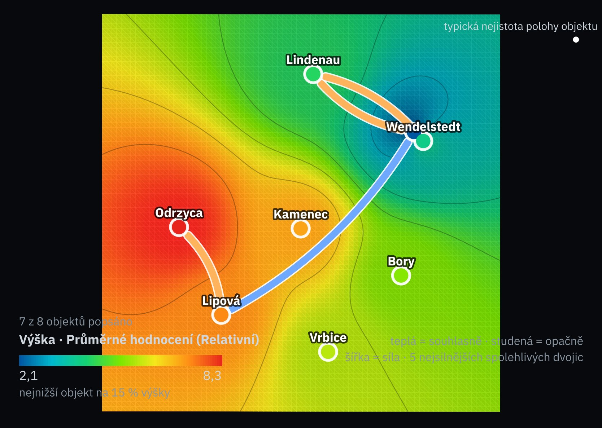
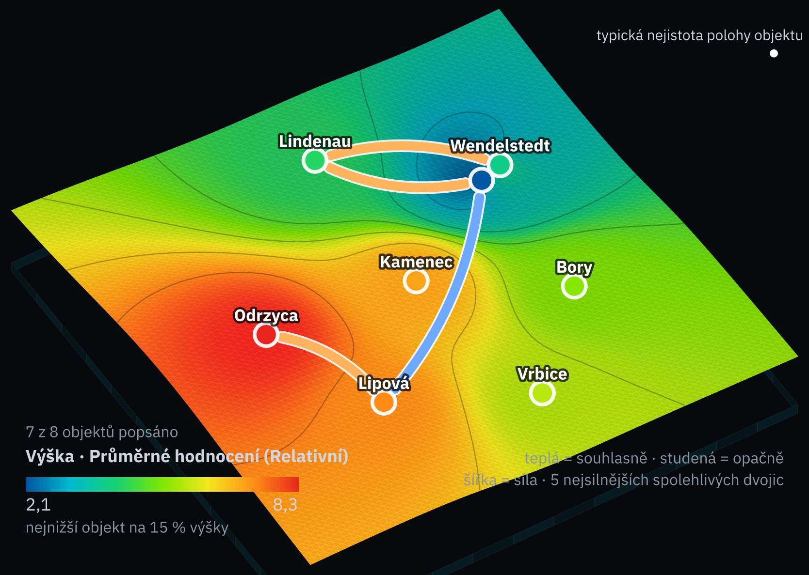
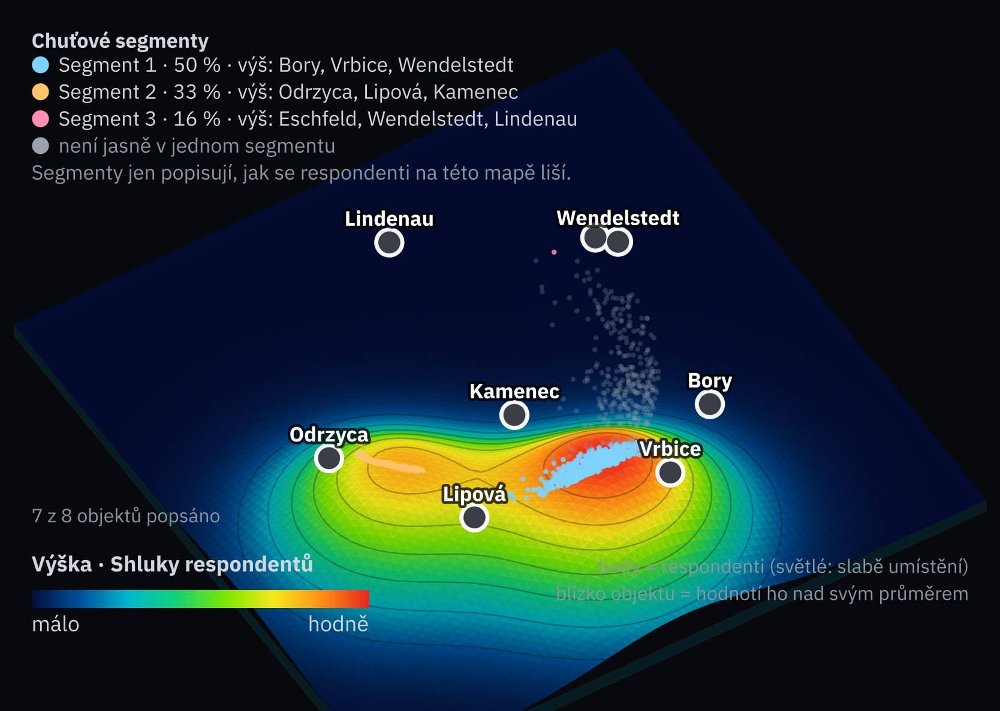
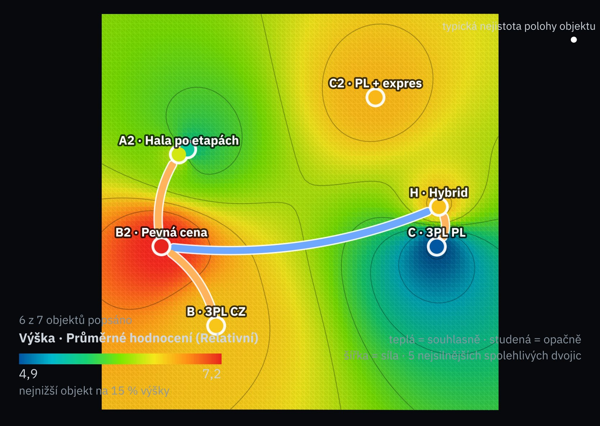
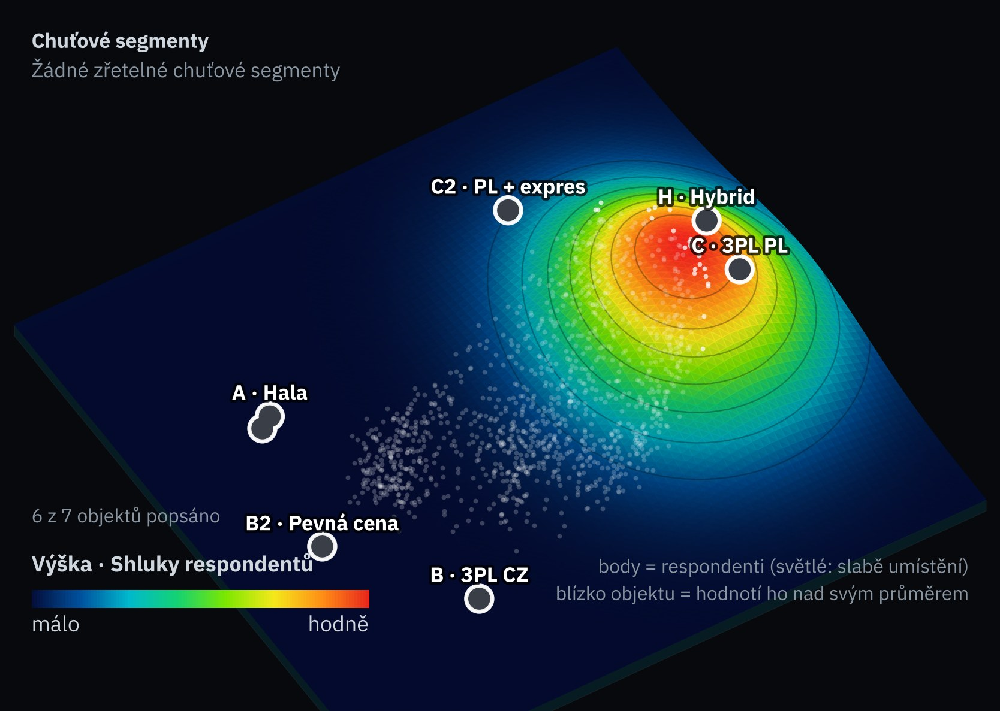

Perspektivy a součásti ChemVitro · vzor ze zprávy 2
21 skórovaných součástí · zdroj, stupeň, směr, schválená škála · co model už počítá| Perspektiva · součást | Zdroj a škála | Úspora | Vrbice | Lipová | Kamenec | Wendelstedt | Lindenau | Eschfeld | Odrzyca | Bory |
|---|---|---|---|---|---|---|---|---|---|---|
| Finanční · váha perspektivy jednou, připuštěné součásti ji sdílejí rovným dílem | ||||||||||
| F1Medián úspory proti nákupu mil. EUR, NPV 2027–2044 při 8 % | T1 odhad0 = 60 · 10 = 140 | úspora | 6,3110,8 | 8,2126 | 9,1132,4 | 2,882,3 | 3,386,5 | 0,161,2 | 9,3134,7 | 7,9123,2 |
| F2Investice v základním případě mil. EUR také brána G4 | T5 výpočet0 = 180 · 10 = 140 | v modelu | 4,8160,6 | 5,3158,6 | 6,9152,3 | 2,0171,8 | 2,3170,8 | 1,1175,5 | 7,8148,9 | 9,0143,9 |
| F3P(investice ≤ 175 mil. EUR) podíl budoucností | T5 odhad0 = 0,4 · 10 = 1 | v modelu | 6,50,79 | 7,00,82 | 8,30,9 | 2,70,56 | 2,80,57 | 1,70,5 | 8,70,92 | 8,70,92 |
| F4IRR % | T4 výpočet0 = 12 · 10 = 22 | úspora | 6,218,2 | 7,219,2 | 7,919,9 | 2,814,8 | 3,515,5 | 2,414,4 | 8,520,5 | 8,120,1 |
| F5Rok návratnosti rok | T4 výpočet0 = 2 037 · 10 = 2 033 | úspora | 5,02 035 | 7,52 034 | 7,52 034 | 5,02 035 | 5,02 035 | 2,52 036 | 7,52 034 | 5,02 035 |
| F6NPV po zdanění při 8 % mil. EUR, základní případ daň je pevný parametr; sazby prozatímní | T4 výpočet0 = 60 · 10 = 130 | úspora | 5,296,6 | 8,0116,3 | 8,8121,3 | 3,584,3 | 4,692,4 | 1,369,3 | 8,4118,6 | 5,799,7 |
| Pobídky: daňová úleva (CZ, PL) nebo dotace (DE), podíl a P(schválení) 0,5 | R2-P10, T9 z dat klienta · právní předpis · úsudek | informační: CZ 20–25 %, Odrzyca 35 %, Bory 50 %, Wendelstedt 15 %, Lindenau 20 %, Eschfeld 0; v základním případě nezapočteno, ve výhledu po zdanění ano | ||||||||
| Strategická · váha perspektivy jednou, připuštěné součásti ji sdílejí rovným dílem | ||||||||||
| S1Společné selhání s vedoucí lokalitou (Odrzyca) podíl budoucností, v nichž je horší než nákup i tato lokalita Odrzyca je vedoucí lokalita sama: neuplatní se | T8, R2-P12 odhad0 = 1 · 10 = 0,7 | mimo model | 3,30,9 | 5,30,84 | 7,00,79 | 0,70,98 | 1,00,97 | 0,30,99 | n/aneuplatní se | 3,00,91 |
| Závislost na jednom dodavateli · přirážka při prodloužení 12–22 % · podmínky po roce 2035 · zůstatková hodnota 30 % | R2-P03 §2.4, R2-P08 §7.2, T9 z dat klienta · úsudek | stejné pro všechny lokality: páky nákupu proti vlastní výrobě, ne rozdíly mezi lokalitami | ||||||||
| Tržní pozice | neuplatní se: závod zásobuje jen Brno (62 %) a Pardubice (38 %) | |||||||||
| Provozní · váha perspektivy jednou, připuštěné součásti ji sdílejí rovným dílem | ||||||||||
| P1Energie na tunu 2032 EUR/t | T6 výpočet0 = 200 · 10 = 170 | v modelu | 7,0179 | 7,0179 | 7,0179 | 6,0182 | 3,3190 | 3,3190 | 2,7192 | 2,7192 |
| P2Údržba, pojištění a poplatek parku na tunu 2032 EUR/t | T6 výpočet0 = 160 · 10 = 100 | v modelu | 7,8113 | 6,0124 | 8,2111 | 0,5157 | 4,7132 | 6,3122 | 9,2105 | 9,5103 |
| P3Odpad a voda na tunu 2032 EUR/t | T6 výpočet0 = 50 · 10 = 35 | v modelu | 4,743 | 3,345 | 5,342 | 8,038 | 2,047 | 1,348 | 7,339 | 8,737 |
| Provozní náklad na tunu 2032 celkem | T6 výpočet | součet položek (P1–P3, L1, H1, suroviny 760 a CO₂ 56): 1 311 · 1 300 · 1 295 · 1 455 · 1 434 · 1 463 · 1 292 · 1 290 EUR/t; kreslí se po položkách, aby se mechanismus nepočítal dvakrát | ||||||||
| Najíždění 60–90 % v prvním půlroce | T9 úsudek | stejné pro všechny lokality | ||||||||
| Marketingová a obchodní · bez součásti | Pro ChemVitro prázdná: vázaná poptávka, žádný slib zákazníkům. Pro Velis ústřední (slib doručení, doba doručení, růst poptávky). | |||||||||
| Logistická · váha perspektivy jednou, připuštěné součásti ji sdílejí rovným dílem | ||||||||||
| L1Doprava produktu do Brna a Pardubic EUR/t | T6 výpočet0 = 60 · 10 = 15 | v modelu | 4,938 | 8,920 | 8,024 | 0,458 | 1,653 | 1,155 | 5,137 | 6,033 |
| L2Vlečka k postavení: 3,4 km × 1,9–2,8 mil. EUR/km mil. EUR Odrzyca: cena za km je rozpětí; získání pozemků 6–24 měsíců (úsudek) | T5, T9 z dat klienta · odhad0 = 8 · 10 = 0 | v modelu | 10,00 | 10,00 | 10,00 | 10,00 | 10,00 | 10,00 | 0,0–1,96,5–9,5 | 10,00 |
| L3Silniční přístup: zesílení mostu (nosnost 16 t proti 40 t) mil. EUR Eschfeld: 3,2–5,0 mil. EUR, základní případ 4,1 | T5, T9 z dat klienta0 = 6 · 10 = 0 | v modelu | 10,00 | 10,00 | 10,00 | 10,00 | 10,00 | 1,7–4,73,2–5 | 10,00 | 10,00 |
| L4Doprava surovin přes překladiště do stavby vlečky EUR/t surovin navíc Odrzyca: žádná nabídka, úsudek 10–40 | T9 úsudek0 = 40 · 10 = 0 | v modelu | 10,00 | 10,00 | 10,00 | 10,00 | 10,00 | 10,00 | −0,0–7,510–40 | 10,00 |
| Prostředí a povolování · váha perspektivy jednou, připuštěné součásti ji sdílejí rovným dílem | ||||||||||
| E1Šance na kompenzační opatření (stanice nad limitem memoranda) podíl také brána G3 · rozhodující vstup modelu; bez dokladu o konkrétní lokalitě | R2-P05, T9 z dat klienta · úsudek0 = 1 · 10 = 0 | v modelu | 2,00,8 | 8,00,2 | 8,00,2 | 10,00 | 10,00 | 10,00 | 8,00,2 | 2,00,8 |
| E2Prodloužení povolování s kompenzací měsíce Česko 9–15, Polsko 12–18, Německo bez kompenzace | T9 z dat klienta0 = 18 · 10 = 0 | v modelu | 1,7–5,09–15 | 1,7–5,09–15 | 1,7–5,09–15 | 10,00 | 10,00 | 10,00 | −0,0–3,312–18 | −0,0–3,312–18 |
| E3Předčištění odpadních vod mil. EUR Lipová a Lindenau: 6,7–14,1 ze srovnatelných závodů, základní případ 10 | T5, T9 z dat klienta · odhad0 = 15 · 10 = 0 | v modelu | 10,00 | 0,6–5,56,7–14,1 | 10,00 | 10,00 | 0,6–5,56,7–14,1 | 10,00 | 10,00 | 10,00 |
| E4Poplatek chemického parku mil. EUR ročně | T9 z dat klienta0 = 1,5 · 10 = 0 | v modelu | 10,00 | 10,00 | 10,00 | 2,71,1 | 10,00 | 10,00 | 10,00 | 10,00 |
| Emise CO₂ a EU ETS | T6 výpočet | stejné pro všechny lokality: 56 EUR/t | ||||||||
| Lidé · váha perspektivy jednou, připuštěné součásti ji sdílejí rovným dílem | ||||||||||
| H1Náklady na zaměstnance na tunu 2032 EUR/t | T6, T9 výpočet · právní předpis (prozatímní)0 = 250 · 10 = 90 | v modelu | 8,1121 | 8,4116 | 7,9124 | 2,9203 | 3,4195 | 1,1232 | 9,2102 | 8,8109 |
| H2Doba obsazení místa operátora dny jen zátěžová zkouška modelu; zpráva uvádí Eschfeld a rozpětí ostatních regionů | R2-P07 §6.2, Trh práce v regionech z dat klienta0 = 120 · 10 = 40 | mimo model | 6,1–8,949–71 | 6,1–8,949–71 | 6,1–8,949–71 | 6,1–8,949–71 | 6,1–8,949–71 | 0,2118 | 6,1–8,949–71 | 6,1–8,949–71 |
| H3Velký nábor v okolí do roku 2028 lidí Kamenec 380; u Borů zpráva nábor jmenuje bez čísla: rozsah | Trh práce v regionech, kap. 13 z dat klienta0 = 400 · 10 = 0 | mimo model | 10,00 | 10,00 | 0,5380 | 10,00 | 10,00 | 10,00 | 10,00 | 0,5–10,00–380 |
| Růst mezd po roce 2031 | T9 úsudek | stejné pro všechny lokality | ||||||||
Velké číslo je skóre 0–10 na škále schválené se zadavatelem (0 = horší kotva, 10 = lepší, mezi nimi lineárně, mimo ně oříznuto); pod ním hodnota ze zprávy. Čárkovaná buňka je rozsah: zpráva údaj neuvádí jedním číslem, součást si rozsah ponechá a základem výpočtu je doložené minimum; n/a se neuplatní a nenese váhu. Sloupec Úspora je kontrola překryvů: úspora je úspora sama nebo její jiné vyjádření (IRR, návratnost, NPV po zdanění), v modelu je její část, mimo model model nepočítá. Řádky bez skóre jsou stejné pro všechny lokality, informační, nebo se neuplatní; brány (02) součástmi nejsou. Čísla: zpráva 2, tabulky T1, T4, T5, T6, T8, T9, kapitoly 4, 6, 9 a 13.
Brány: pravidlo finanční ředitelky ChemVitro · vzor ze zprávy 2
čtyři podmínky zapsané 2. 11. 2026, žádná není součást, žádná se nekompenzuje| Brána | Vrbice | Lipová | Kamenec | Wendelstedt | Lindenau | Eschfeld | Odrzyca | Bory |
|---|---|---|---|---|---|---|---|---|
| G1 Porazí nákup s pravděpodobností ≥ 0,75T1 | ano0,88 | ano0,91 | ano0,92 | ano0,80 | ano0,81 | ne0,73 | ano0,92 | ano0,91 |
| G2 Ztráta > 20 mil. EUR nejvýš v 10 % budoucnostíT1 | ano0,08 | ano0,06 | ano0,05 | ne0,15 | ne0,14 | ne0,21 | ano0,05 | ano0,06 |
| G3 Výroba k 1. 7. 2030 s pravděpodobností ≥ 0,80T1 | ne0,21 | ne0,76 | ne0,76 | ano0,94 | ne0,77 | ne0,67 | ne0,75 | ne0,19 |
| G4 Investice nejvýš 175 mil. EUR (základní případ)T5 | ano160,6 | ano158,6 | ano152,3 | ano171,8 | ano170,8 | ne175,5 | ano148,9 | ano143,9 |
| Pravidlo dnes (šance na kompenzaci 20 %) | ne | ne | ne | ne | ne | ne | ne | ne |
| Po písemném stanovisku úřadů: bez kompenzace (0 %)kap. 5.3 a 6.1 | ne | prošla | prošla | ne | ne | ne | prošla | ne |
Kontrola překryvů a scénáře vah ChemVitro · vzor ze zprávy 2
6 připuštěných scénářů ve dvou rodinách · jeden odmítnutý · vějíř 300 losů| Scénář | Rodina | Finanční | Strategická | Provozní | Logistická | Prostředí a povolování | Lidé |
|---|---|---|---|---|---|---|---|
| FŘ, jak zadánofinanční ředitelka · přes všechny součásti | odmítnutováží úsporu i její části: mechanismus je uvnitř úspory, úspora sama nebo její jiné vyjádření; nabídnuty rodiny a a b | 0,50 | 0 | 0,30 | 0,20 | 0 | 0 |
| FŘ · afinanční ředitelka (vlastník pravidla) | a Úspora proti tomu, co model nepočítá | 0,60 | 0,20 | 0 | 0 | 0 | 0,20 |
| Rovné váhy · akaždá perspektiva rodiny stejně | a Úspora proti tomu, co model nepočítá | 0,33 | 0,33 | 0 | 0 | 0 | 0,33 |
| VŘ · bvýrobní ředitel | b Části úspory proti sobě, bez úspory samé | 0,20 | 0 | 0,40 | 0,20 | 0 | 0,20 |
| LOG · bvedoucí logistiky (zadání: logistika 0,3 · provoz 0,5 · finance 0,2) | b Části úspory proti sobě, bez úspory samé | 0,20 | 0 | 0,50 | 0,30 | 0 | 0 |
| EHS · bvedoucí EHS | b Části úspory proti sobě, bez úspory samé | 0,20 | 0 | 0 | 0,30 | 0,50 | 0 |
| Rovné váhy · bkaždá perspektiva rodiny stejně | b Části úspory proti sobě, bez úspory samé | 0,20 | 0 | 0,20 | 0,20 | 0,20 | 0,20 |
Scénář je pojmenovaný vektor vah nad perspektivami s rodinou; připuštěné součásti perspektivy sdílejí její váhu, perspektiva bez připuštěné součásti váhu nemá (Strategická v rodině b, Provozní a Prostředí v rodině a). Skládá ho zadavatel nebo lidé klienta; tady ilustrační, 8. 11. 2026; ve studii zapsáno do schvalovací knihy před výsledky. Kolem každého středu losuje vějíř váhy z Dirichletova rozdělení s koncentrací 60 (směrodatná odchylka váhy kolem 0,04–0,06), 300 losů na scénář, seed 20261108; ostatní vstupy zůstávají na základu, takže vějíř zkouší jen váhy.
Mapa scénářů vah ChemVitro · vzor ze zprávy 2
aia-sociomap-5 · 1806 testovaných vah jako řádky · 8 lokalit


Jak mapu číst
Spočítal engine aia-sociomap-5 a nakreslil renderer AIA, kterým zpráva kreslí mapy; v pohledu s body engine nazývá testované váhy respondenty. Mapa je interní: režim čeká na zápis metodika do registru metod.
Kdo je první v každém scénáři ChemVitro · vzor ze zprávy 2
ve středu scénáře a v podílu losů vějíře| Scénář | Vede ve středu (preference) | První po branách | Vrbice | Lipová | Kamenec | Wendelstedt | Lindenau | Eschfeld | Odrzyca | Bory |
|---|---|---|---|---|---|---|---|---|---|---|
| FŘ · a | Odrzyca 8,34 | Odrzyca | 0 % | 0 % | 0 % | 0 % | 0 % | 0 % | 100 % | 0 % |
| Rovné váhy · a | Odrzyca 8,24 | Odrzyca | 0 % | 0 % | 0 % | 0 % | 0 % | 0 % | 100 % | 0 % |
| VŘ · b | Bory 7,38 | Kamenec | 14 % | 1 % | 0 % | 0 % | 0 % | 0 % | 0 % | 84 % |
| LOG · b | Bory 7,94 | Kamenec | 0 % | 0 % | 1 % | 0 % | 0 % | 0 % | 0 % | 99 % |
| EHS · b | Kamenec 8,08 | Kamenec | 0 % | 0 % | 99 % | 0 % | 0 % | 1 % | 0 % | 0 % |
| Rovné váhy · b | Kamenec 7,24 | Kamenec | 11 % | 5 % | 66 % | 0 % | 0 % | 0 % | 8 % | 10 % |
| Všechna testovaná nastavení | 1806 řádků | 4 % | 1 % | 28 % | 0 % | 0 % | 0 % | 35 % | 32 % |
Vede ve středu: lokalita s nejvyšším skóre při vahách scénáře a doloženém minimu, mezi všemi osmi: informace o preferencích. První po branách: totéž jen mezi lokalitami, které by prošly po stanovisku úřadů (02); dnes neprojde žádná. Podíl v %: v kolika losech vějíře je lokalita první mezi všemi; podíly testovaných nastavení, ne pravděpodobnosti. Spodní řádek pojí všechny scénáře obou rodin.
Druhý případ Velis · pracovní případ, smyšlené hodnoty
sedm možností · 7 součástí ze SI1 · 1204 testovaných vah · jen rodina a| Perspektiva · součást | Zdroj a škála | Úspora | A | A2 | B | B2 | C | C2 | H |
|---|---|---|---|---|---|---|---|---|---|
| Finanční · váha perspektivy jednou, připuštěné součásti ji sdílejí rovným dílem | |||||||||
| E1Medián NPV proti B (mil. Kč, 8 %) skóre 1–10 podle pravidla SI1 Překryv: investici, přechod, ztrátu objednávek ze zpoždění, indexaci cen, mzdy a daň | Výsledky (M4) výpočet0 = 1 · 10 = 10 | úspora | 4,4 | 5,6 | 3,3 | 7,8 | 5,6 | 10,0 | 3,3 |
| R1P(ztráta > 10 mil. Kč proti B) (% budoucností) skóre 1–10 podle pravidla SI1 Překryv: stejný model jako E1, jiná vlastnost: chvost, ne medián | Výsledky (M4) výpočet0 = 1 · 10 = 10 | úspora | 5,6 | 7,8 | 10,0 | 10,0 | 5,6 | 10,0 | 10,0 |
| P2Měna nákladu skóre 1–10 podle pravidla SI1 Překryv: mimo model: kurz v Modelu není | Rešerše · PESTEL E úsudek0 = 1 · 10 = 10 | mimo model | 8,9 | 8,9 | 8,9 | 8,9 | 4,4 | 4,4 | 6,7 |
| Strategická · váha perspektivy jednou, připuštěné součásti ji sdílejí rovným dílem | |||||||||
| D1Závislost na jednom dodavateli skóre 1–10 podle pravidla SI1 Překryv: mimo model: vyjednávací síla, ne cena | Rešerše · Porter úsudek0 = 1 · 10 = 10 | mimo model | 7,8 | 7,8 | 3,3 | 4,4 | 3,3 | 2,2 | 6,7 |
| F1Jak rychle se dá rozhodnutí změnit skóre 1–10 podle pravidla SI1 Překryv: mimo model: Model počítá jeden průběh na 7 let | Rešerše · PESTEL L úsudek0 = 1 · 10 = 10 | mimo model | 1,1 | 2,2 | 8,9 | 5,6 | 2,2 | 2,2 | 3,3 |
| Provozní · váha perspektivy jednou, připuštěné součásti ji sdílejí rovným dílem | |||||||||
| T1Začátek nového stavu skóre 1–10 podle pravidla SI1 Překryv: mimo model jako termín; náklad čekání je v E1 | Zadání · dokumenty úsudek0 = 1 · 10 = 10 | mimo model | 4,4 | 4,4 | 10,0 | 8,9 | 6,7 | 6,7 | 6,7 |
| Marketingová a obchodní · bez součásti | Slib doručení do 1 dne ve velkých městech je brána G1 (doba doručení 1 den, C 2 dny) a nekompenzuje se; růst poptávky je pro všechny stejný: skórovaná součást není. | ||||||||
| Logistická · váha perspektivy jednou, připuštěné součásti ji sdílejí rovným dílem | |||||||||
| F2Kapacita na rok 2032 (podíl potřeby) skóre 1–10 podle pravidla SI1 Překryv: částečně v E1 (přetečení k 3PL); zde rezerva pro růst nad 9 % · neznámo u B, B2: rozsah skóre | Data · Předpoklady výpočet0 = 1 · 10 = 10 | mimo model | 3,3 | 3,3 | 1,1–10,02–10 | 1,1–10,02–10 | 7,8 | 7,8 | 10,0 |
| Prostředí a povolování · bez součásti | Pro Velis prázdná: sklad ani 3PL povolení nepotřebují. | ||||||||
| Lidé · bez součásti | Růst mezd je předpoklad Modelu, uvnitř E1 (překryv P1 vypuštěn v SI1). | ||||||||
Skóre jsou buňky matice SI2 (pravidla SI1); neznámá kapacita 3PL CZ (F2 u B a B2) zůstává rozsahem. E1 a R1 jsou úspora a její chvost z téhož modelu, ostatní součásti model nepočítá; části úspory SI1 vypustil, takže Velis má jen rodinu a. Slib doručení je brána G1 (C ji nesplní), investiční strop G2.
| Scénář | Rodina | Finanční | Strategická | Provozní | Logistická |
|---|---|---|---|---|---|
| FRfinanční ředitel (vlastník rozhodnutí) | a Úspora proti tomu, co model nepočítá | 0,62 | 0,24 | 0,04 | 0,09 |
| ORobchodní ředitelka | a Úspora proti tomu, co model nepočítá | 0,42 | 0,27 | 0,08 | 0,23 |
| VLvedoucí logistiky | a Úspora proti tomu, co model nepočítá | 0,36 | 0,36 | 0,11 | 0,18 |
| Rovné váhykaždá neprázdná perspektiva stejně | a Úspora proti tomu, co model nepočítá | 0,25 | 0,25 | 0,25 | 0,25 |
swing weighting ze SI1, schváleno FR 4. 11. před prvním skóre; rovné váhy ilustrační; sečteno po perspektivách.
| Scénář | Vede ve středu (preference) | První po branách | A | A2 | B | B2 | C | C2 | H |
|---|---|---|---|---|---|---|---|---|---|
| FR | B2 7,20 | B2 | 0 % | 0 % | 0 % | 92 % | 0 % | 2 % | 6 % |
| OR | H 6,99 | H | 0 % | 0 % | 0 % | 4 % | 0 % | 0 % | 96 % |
| VL | H 6,67 | H | 0 % | 0 % | 6 % | 8 % | 0 % | 0 % | 86 % |
| Rovné váhy | H 7,08 | H | 0 % | 0 % | 4 % | 0 % | 0 % | 0 % | 96 % |
| Všechna testovaná nastavení | 1204 řádků | 0 % | 0 % | 2 % | 26 % | 0 % | 1 % | 71 % |
Vede ve středu mezi všemi sedmi; první po branách mezi těmi, které G1 a G2 pustí (C ne). Podíly: losy vějíře, ve kterých je možnost první.

